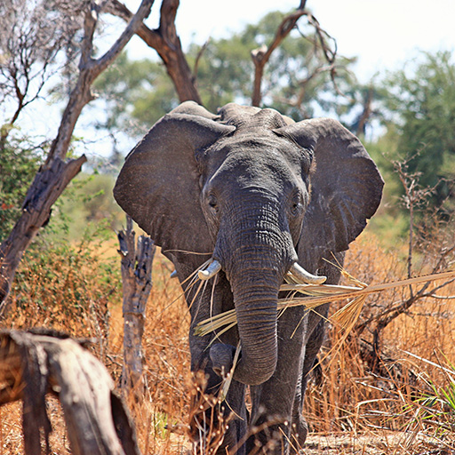

Monday, 24/12 10:00-13:00
Free entrance.
Friday, 21/12 11.00-13.40
We become wiser on the Santa's faithful helpers.
Sunday, 16/12 11:00-14: 30
We are open to the school service.
Friday, 14/12 11.00-13.40
We become wiser on the Santa's faithful helpers.
Thursday,13/12 13.30-14.00
Come and help activate and feed the nostrils.
In 1935, Aalborg Zoo opened a recreational garden with a collection of animals aimed at entertaining and teaching the audience.
We must also help to ensure their natural habitats.
Read more about us here
The conservation of habitats is extremely important and for a sustainable solution, it needs to be done in cooperation with local populations.
Aalborg Zoo participates in several projects to preserve animal and plant life worldwide.
Zoo cooperates with organizations to make an effort wherever there is a need for help.
We try to give our guests an insight into this cooperation.
That way, Zoo's visitors can help make a difference in nature.
Aalborg Zoo Conservation Foundation (AZCF) was established on January 1, 2014.

Black Mamba
Aalborg Zoo is the main sponsor for something quite unique, namely Black Mamba.
A group of 26 local women operating in Balule in South Africa.
Read more
Balule is a 400 km2 large part of the world-renowned Kruger National Park.
Black Mamba is protection against snipers and poachers.
It is our conviction that the war against poachers can't be won by bullets, but instead through the education of the community.
This is where these women make a significant difference.
Culturally speaking, they have a much greater credibility than men.
The illegal hunting of the wild animals in Africa has exploded throughout the last decade.
Especially the elephants and rhinos are very hard hit.
So hard that the trade in endangered species today is considered the world's fourth largest criminal economy.
In less than 2 years, Black Mamba has reduced the poaching in their area by 76%.
Payamino
This project aims at maintaining a rainforest area of 16,000 hectares in the Ecuadorian part of the Amazon.
Read more
The focus has always been wildlife and habitat protection, but we soon realized that we need to focus on the community and education.
The Payamino Project is committed to helping the community manage their own future.
Our development work is focussed on what the community needs.
We help with funding education and health work, providing resources and expertise, as well as teaching and training on the ground.
Project Payamino was initiated because there was a need for support in the community.
San José de Payamino have a territory of 60.000 ha of primary rainforest in one of the most species diverse areas of the world.

Elephants
Through the four years, Aalborg Zoo has developed close cooperation with Transfrontier Africa in South Africa
Read more
Counting and monitoring of elephants are through poaching shooting and mounting of GPS on the elephants.
Aalborg Zoo became the main sponsor of the camp in November 2012.
The survival of the project was thus threatened until Aalborg Zoo chose to donate funds so that the project could re-establish itself in a new location.
The money was raised through collections from Aalborg Zoo's audience and by direct subsidies from Aalborg Zoo.